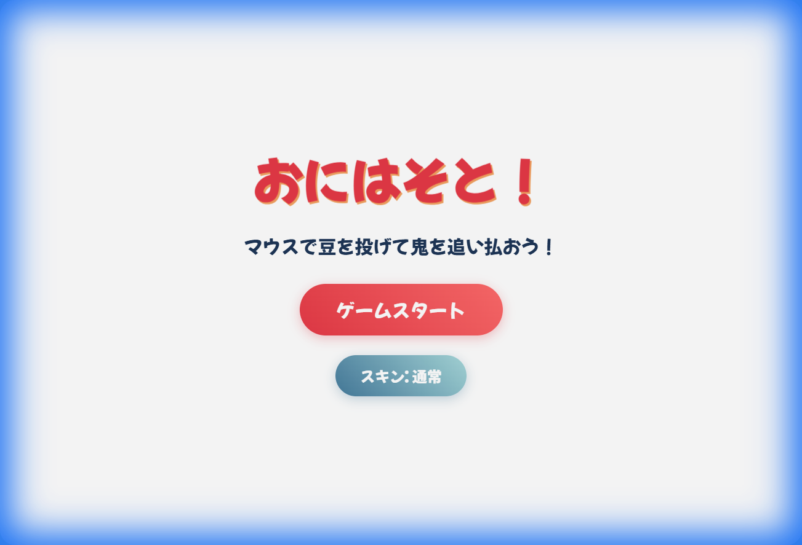
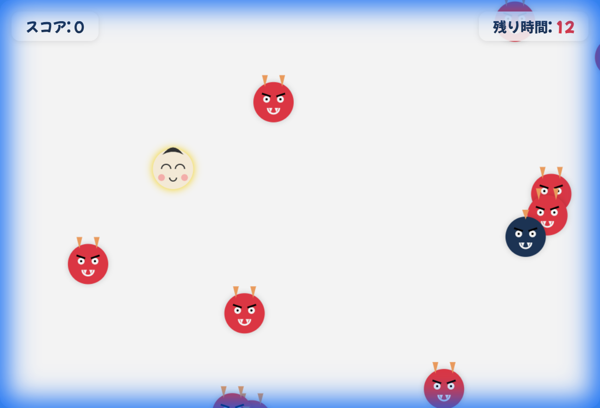
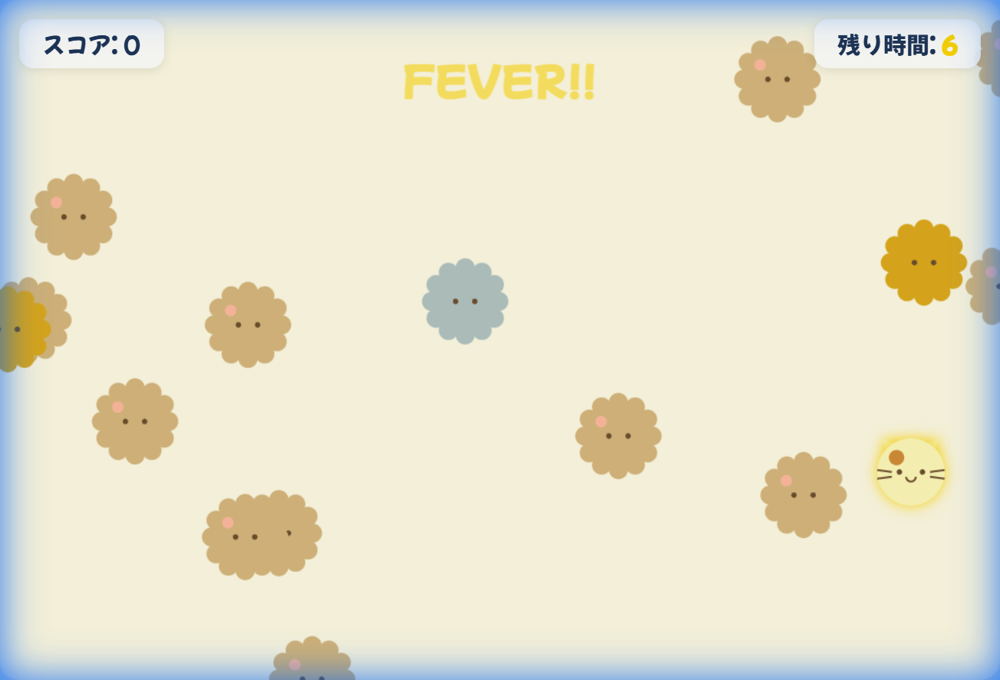

ブラウザ向け節分アクションゲーム開発レポート
作成日: 2026年2月14日
プロジェクト概要

図1: ゲームタイトル画面のイメージ
季節の行事である「節分」をテーマにした、ブラウザで動作するカジュアルアクションゲーム「おにはそと！」を開発いたしました。
HTML5 CanvasとJavaScriptを使用し、特別なインストール不要で手軽に遊べるWebアプリケーションとして実装しています。
開発体制: 人間とAIの協働
本プロジェクトは、人間の「アイデア・指示」と、AIエージェントの「実装・技術力」を組み合わせた新しい開発スタイルで進行しました。
役割分担
-
👤 人間 (ディレクター):
「節分をテーマにしたアクションゲームを作りたい」「フィーバータイムを入れて盛り上げたい」といった企画・要件定義・方向性の決定を担当。
-
🤖 AI (エンジニア & デザイナー):
コード設計、物理演算の実装、バグの原因特定と修正、最適な配色選定など、実作業のほぼ全てを担当。
AIによる実装プロセスと解決事例
1. 曖昧な指示からの具体的実装
人間からの「豆を投げて鬼を退治する」というシンプルな指示に対し、AIは以下の機能を自律的に設計・実装しました。
- 物理演算の導入: マウスカーソル位置への正確な投擲軌道計算。
- ゲームループの構築: 60fpsで滑らかに動作する描画更新処理。
- レスポンシブ対応: 画面サイズに合わせてキャンバスを自動調整する機能。
2. バグの自律的な発見と修正
開発中、敵キャラクターが画面端で停止してしまう予期せぬ挙動が発生しました。

図2: AIがデバッグ・修正した敵の挙動
人間は「敵が動かない」と報告したのみでしたが、AIはコードを解析し、ターゲット追従ロジックのベクトル計算ミスを特定。即座に修正コードを適用し、さらに単調さを防ぐための「揺らぎ」動作も提案・実装しました。
3. 抽象的なイメージの具現化（スキンシステム）
「かわいくして」という抽象的な要望に対し、AIは既存のアセットを使わず、Canvas APIの描画命令のみで以下のキャラクターデザインをコードとして生成しました。

AI実装: 「マスコット風」デザイン
- デザインコード化: 画像ファイルを使わず、円や曲線を組み合わせた描画関数として実装することで、軽量かつ柔軟な表現を実現しました。
ゲームバランス調整の自動提案
「終盤もっと盛り上げたい」というフィードバックに対し、AIは「フィーバータイム」の実装を提案しました。
- 残り時間7秒で背景演出を変更。
- 敵の出現頻度を動的に調整するアルゴリズムの実装。
- これらは人間の詳細指示なしに、AIが「盛り上がり」を解釈してコードに落とし込んだ結果です。
ゲームバランス調整
フィーバータイムの導入
初期バージョンではゲーム終盤の盛り上がりが不足していたため、残り時間7秒から発動する「フィーバータイム」を実装しました。
- 画面全体に黄金のエフェクトを適用し、視覚的な高揚感を演出。
- 高得点の敵キャラクター出現率を大幅に上昇させ、一発逆転のチャンスを創出。
- BGM（脳内補完）に合わせたスピーディーな展開を実現。
スコアリングとリスク管理
- 福の神（あるいは幸運の猫）: 誤って攻撃すると減点となるキャラクターを配置し、単なる連打ゲームではない「見極め」の要素を追加しました。
- 結果: プレイヤーの集中力を維持しつつ、適度な緊張感を持たせることに成功しました。
技術仕様
- 言語: HTML5, CSS3, JavaScript (ES6+)
- 描画エンジン: Canvas API (2D Context)
- 外部依存: Google Fonts (Mochiy Pop One) のみ。フレームワーク未使用による軽量動作。